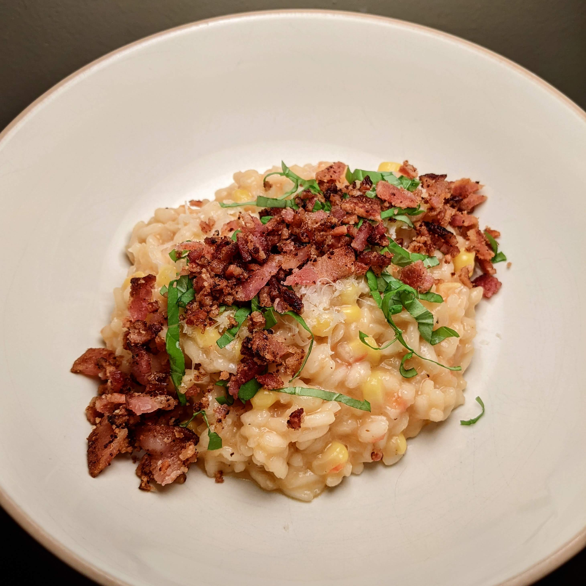

Sweet Corn Risotto Recipe

Description
Risotto is a delicious, satisfying, and inexpensive meal that takes time (around an hour) but is very approachable for beginner chefs -- despite
what the pros might tell you, it's really hard to mess up a risotto. Some ingredients that can elevate this dish from "quite nice" to "MINDBLOWING" are:
homemade concentrated chicken or veggie stock, a very mild and drinkable Italian white wine (I recommend Grillo or Pecorino), and Carnaroli rice instead
of the more widely available Arborio variety.
Ingredients
- Carnaroli Rice
- Chicken or Veggie Stock
- Olive Oil
- Corn on the Cob
- Tomatoes
- Yellow Onion
- Garlic
- Bacon
- Basil
- Pecorino or Parmesan Cheese
- White Wine
Steps
- Get the stock simmering in a separate pot.
- Meanwhile, finely dice onions and garlic, then sweat them in some olive oil.
- Pour your rice into the same pot as the vegetables to get toasty, then deglaze with white wine until it's all absorbed.
- Begin adding stock to the rice one ladleful at a time, adding more when it's almost all absorbed.
- As the rice is cooking, fry off your bacon, then drain on paper towels and dice it up.
- When the rice is close to done, mix in peeled, seeded, finely diced tomato and corn sliced off the cob, then briefly sauteed in butter. Bonus points for grilling the corn instead!
- Finish the dish with a healthy dose of microplaned cheese, adjust hydration with more stock if necessary, then mix it all together and divide into serving bowls.
- Garnish each serving with bacon, a shower of cheese, and julienned basil.